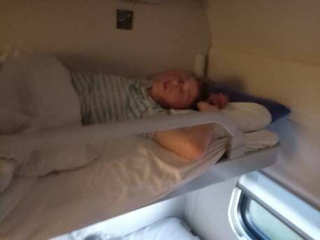

От Автора: Дорогой читатель, если ты каким то образом нашёл эту статью я тебе искренне соболезную, видимо ты прочитал весь интернет и теперь нашёл это, статья не несёт никакой поучительной информации, она создана только для развлекательных целей, а так же дорогой Денчик, прошу не обижаться если прочитаешь здесь что то обидное. Желаю всем приятного просмотра, то есть прочтения, а мы начинаем!
Кто же такой Денис, Денчик, Дефис или просто какой то чел? Как мы все знаем (никто кроме авторов этой статьи) что Денис это великая личность, он просто мегахорош, хоть и не всегда получается красивым на фото. В этой статье мы разберём его внешний вид, характер, его слабые и сильные стороны, его рацион питания а так же многое другое.
Как мы можем заметить Денис всегда и везде ходит в мерче PlayStation. Что это может означать, спросите вы. А я вам отвечу: «Знает только сам Денис, если вам интересно спросите у него: +7… На самом деле Денис очень привлекательный (Я бы его оттаробанил), но к сожалению для него и для всех наших читателей вы не увидите его истинной красоты так как её никому ещё не удавалось запечатлеть на камеру. В принципе на этом можно закончить, если вы видите человека всегда носящего мерчь PlayStation значит это точно Денис Бурдак.
В обычной жизни Денис достаточно спокойный и дружелюбный, но если вы вдруг окажетесь вместе с ним в одном купе поезда вам явно не поздоровиться. Во первых если разозлить Дениса то он может спокойно закрыться и вы останетесь на улице. Во вторых Денис может атаковать вас ночью и вставить вам кое что кое куда, по этому при поездках рекомендуется носить железные трусы. Главное не злить Дениса и тогда всё будет хорошо и вам с ним очень понравиться в одной кроватке.
Не многие знают но на самом деле Денис не живёт в квартире или доме. Он обитает на верхних полках в вагонах поездов дальнего следования компании РЖД. Встретить его можно там довольно редко, обычно он там появляется в случае экскурсии, на данный момент Денис был замечен у себя дома всего несколько раз: при поездке в Нижний Новгород, а так же при поездке в Казань. Именно при втором случае нашей команде фото и видео операторов удалось запечатлить Дениса в своей привычной среде обитания:

Питание Дениса очень простое. Он питается всего несколькими продуктами: вафельные конфеты «КОРОВКА» а так же девственностью маленьких мальчиков. Но больше всего предпочитает конечно же вафельные конфеты. Глава шестая: Слабые стороны В этой главе мы обсудим слабые стороны Дениса. Одно из самых главных это его умственные способности. Наша команда учёных провела несколько опытов и тестов над Денисом которые показали очень низкий процент iq. Так же у Дениса явные проблемы с кнопками. Кнопки в любых их проявлениях вызывают у Дениса негатив, страх, отчаяние и ужас. Последний раз Денис не мог закрыть дверь с помощью нажатия кнопки в течении пяти минут, с этой задачей он справился только после просмотра инструкции одного из наших специалистов в области кнопок.
В этой главе мы обсудим слабые стороны Дениса. Одно из самых главных это его умственные способности. Наша команда учёных провела несколько опытов и тестов над Денисом которые показали очень низкий процент iq. Так же у Дениса явные проблемы с кнопками. Кнопки в любых их проявлениях вызывают у Дениса негатив, страх, отчаяние и ужас. Последний раз Денис не мог закрыть дверь с помощью нажатия кнопки в течении пяти минут, с этой задачей он справился только после просмотра инструкции одного из наших специалистов в области кнопок.
У Дениса как и у любого другого человека должны быть сильные стороны. Одной из них является быстрая обучаемость Дениса. После объяснения использования дверной кнопки она больше не вызывала у Дениса затруднений. Так что можно считать что он очень быстро учиться на своих ошибках. Так же можно выделить ещё одну сильную сторону Дениса. Это то что он никогда не получается красивым на фото. Вы спросите: «Почему это сильная сторона?». Да потому, дорогие читатели, что никто не сможет узнать Дениса по фото, так что он может не бояться попадать под видеокамеры.
Зачем вам нужен Денис? В этом мы расскажем в этой главе. В принципе Дениса можно использовать как угодно. Можно держать в подвале, заставлять работать на хлопковых плантациях или попросту убирать ваш дом. Делать с ним можно абсолютно всё что захотите. Денис – ваш персональный раб.
Это одна из самых важных глав. Что бы поймать Дениса вам понадобиться всего лишь несколько упаковок конфет «КОРОВКА». Просто раскладывайте их в дорожку и ведите её к любой клетке (подойдёт даже мышеловка), после того как Денис заметит вашу дорожку, он проследует по ней до самой клетки и не заметя её попадёт в ловушку.
Спасибо всем наркоманам, алкоголикам и сумасшедшим за прочтения данной статьи. Мы будем вам очень благодарны. Идеи, а так же комментарии по поводу этой статьи вы можете оставить в наших соц. сетях: Дискорд Желаю всем удачи. Ждите и читайте наши статьи каждую осень пятой недели четверга.